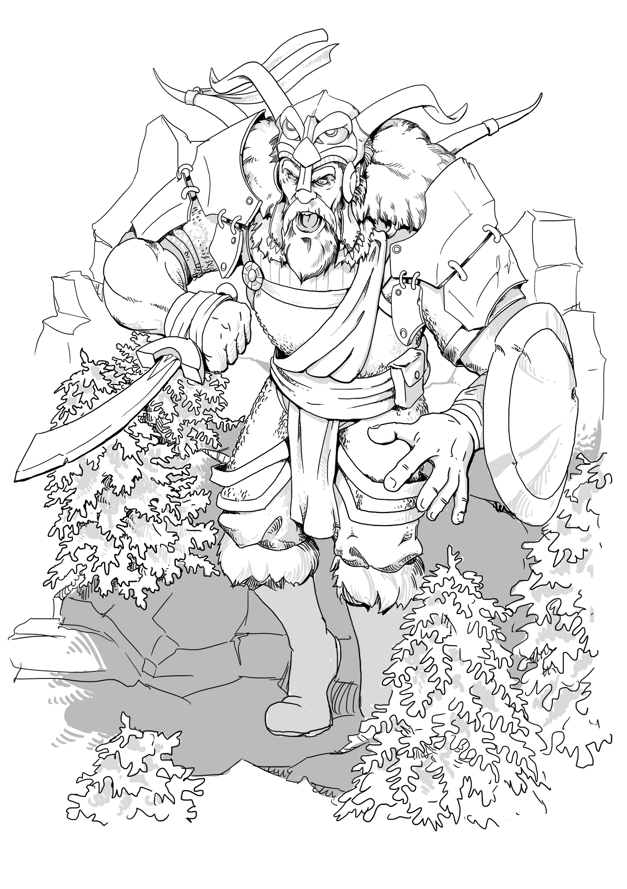

Complete Monster
by
Radaghast Kary
← Occult Dragon
↑Index↑
Ocean Strider →

Illustration by Mariana Ruiz Villarreal,
Public Domain
Ocean Giant
is a
Giant
3e
CG
CE
Pathfinder facts
CR: 14
XP: 38,400
Size: Huge
Type:
Humanoid
Tags: aquatic, giant
Initiative: +4
Senses: low-light vision
AC: 28, touch 8, flat-footed 28 (+20 natural, –2 size)
HP: 218 (19d8+133)
Saves: Fort +18, Ref +8, Will +10
Speed: 50 ft., swim 40 ft.
Melee: mwk trident +29/+24/+19 (3d6+22) or 2 slams +27 (2d6+15)
Space: 15 ft.
Reach: 15 ft.
Abilities: Str 40, Dex 11, Con 25, Int 12, Wis 15, Cha 18
Attacks: Base Atk +14; CMB +31 (+33 bull rush); CMD 41 (43 vs. bull rush)
Feats: Augment SummoningB (with conch), Combat Reflexes, Critical Focus, Improved Bull Rush, Improved Initiative, Iron Will, Lightning Reflexes, Martial Weapon Proficiency (trident), Power Attack, Vital Strike, Weapon Focus (trident)
Skills: Intimidate +17, Knowledge (nature) +11, Perception +24, Perform (wind) +13, Survival +14, Swim +24
Languages: Aquan, Common, Giant
Organization: solitary, gang (2–5), family (2–5 plus 35% noncombatants and 1 druid or sorcerer of 4th–7th level)
Treasure: standard (mwk trident, other treasure)
Pathfinder sources
Bestiary 4
Pathfinder links
Ocean Giant in Pathfinder 1 SRD
D&D 3.0 facts
Type:
Giant
Tags: Aquatic, Cold
Size: Huge
CR: 19
D&D 3.0 sources
Monster Manual II
, p. 112
{kind=link}